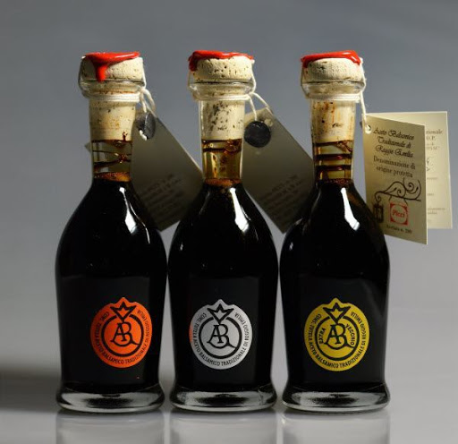

ACETO BALSAMICO TRADIZIONALE DI REGGIO EMILIA
VINI E ACETO

- Descrizione
- L'Aceto Balsamico Tradizionale di Reggio Emilia si ottiene grazie a lunghissimo invecchiamento (minimo dodici anni) di mosto cotto di uve locali, in una batteria di botticelle di legni differenti a grandezza scalare, con travasi annuali e periodici rabbocchi. Il risultato di tanta paziente sapienza è un liquido sciropposo, bruno scuro, dal profumo penetrante e dall'inimitabile gusto agrodolce.
- L'Aceto Balsamico Tradizionale di Reggio Emilia viene venduto nelle tipiche bottigliette da 100 cc. dalla forma simile a un tulipano rovesciato, sigillate sul tappo con il timbro a ceralacca del Consorzio (a garanzia della qualità del contenuto) e fregiate di bollini numerati a tre diverse colorazioni (aragosta, argento, oro), distintive di altrettante qualità.
- Consigli d'utilizzo
- L'utilizzo di un prodotto così peculiare e prezioso va, naturalmente, ben meditato e ben dosato. L'aceto balsamico è di natura eclettico. Si sposa a raffinate insalate, ma impreziosisce anche il lesso o una scaglia di Parmigiano-Reggiano. Si può berne un cucchiaino come elisir o metterne qualche goccia sul gelato. Poche gocce di balsamico aromatizzano in modo impagabile fragole e zabaione.
Torna alla pagina iniziale
by Bartoli Matteo